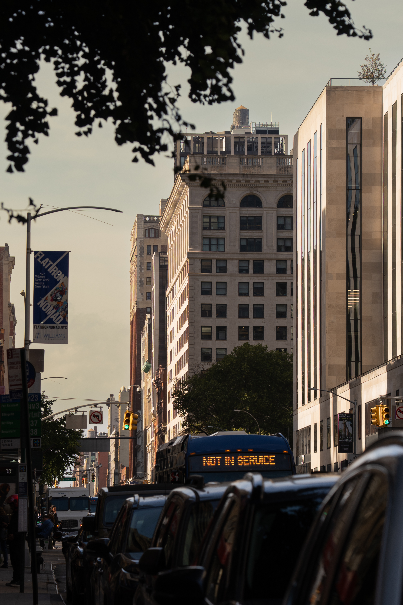
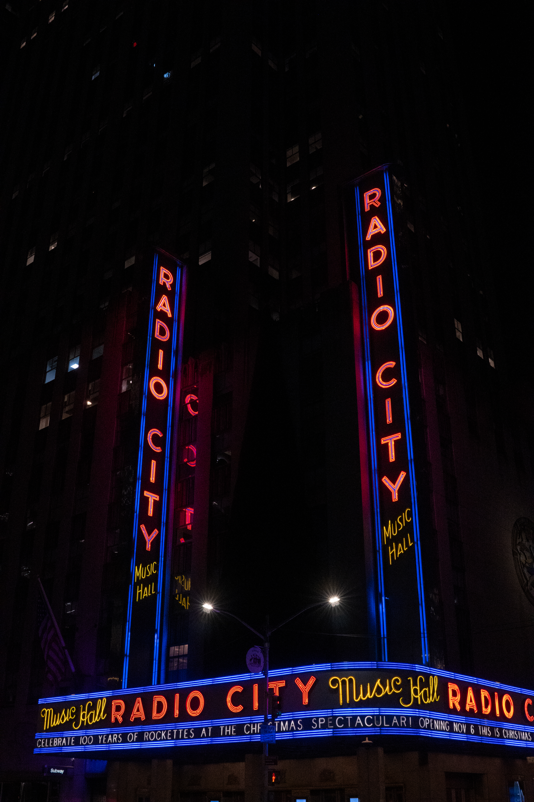
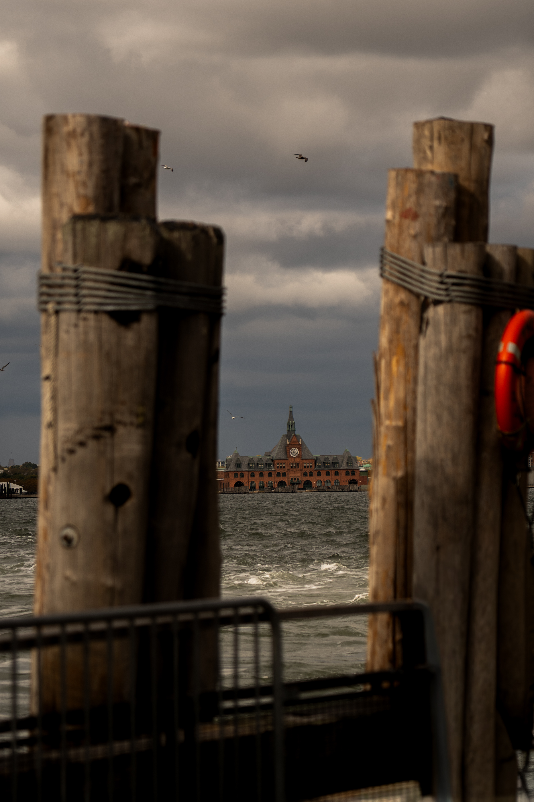
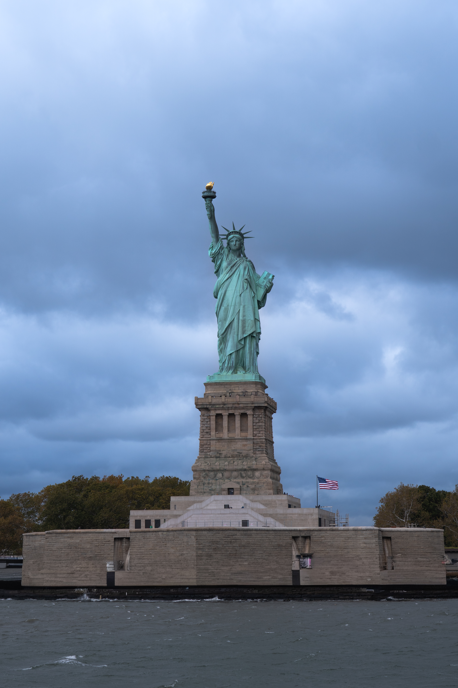
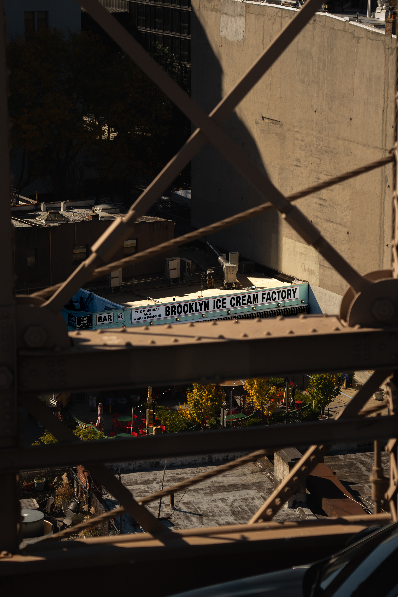
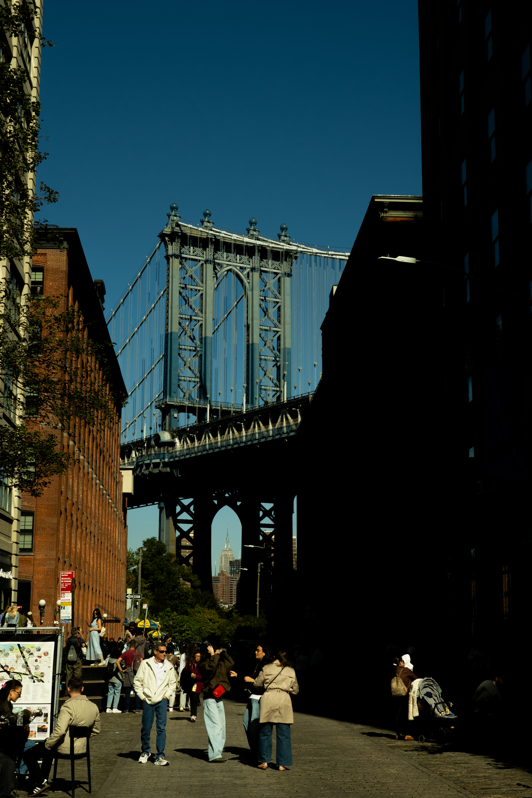
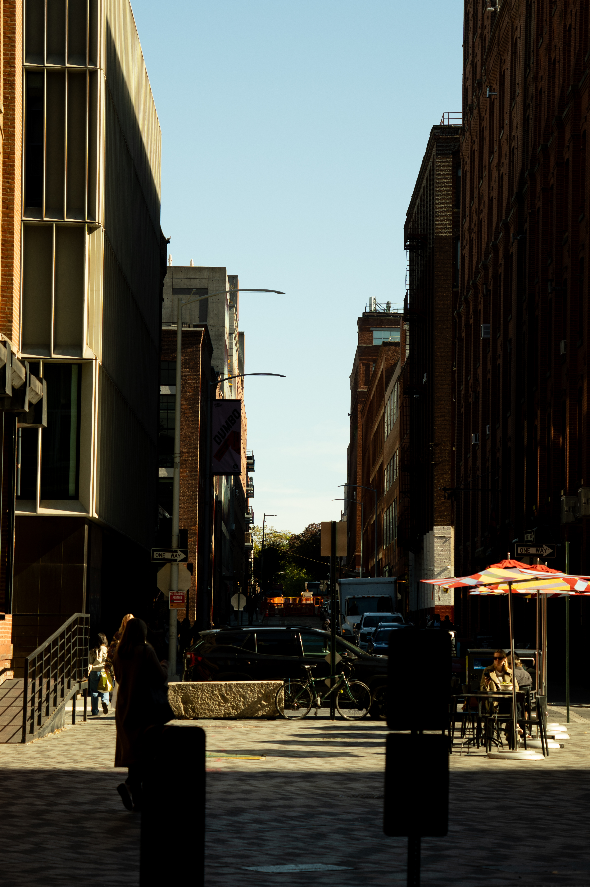
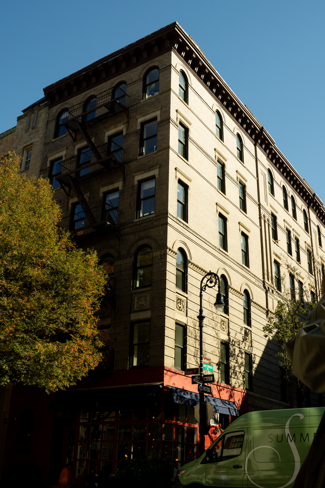
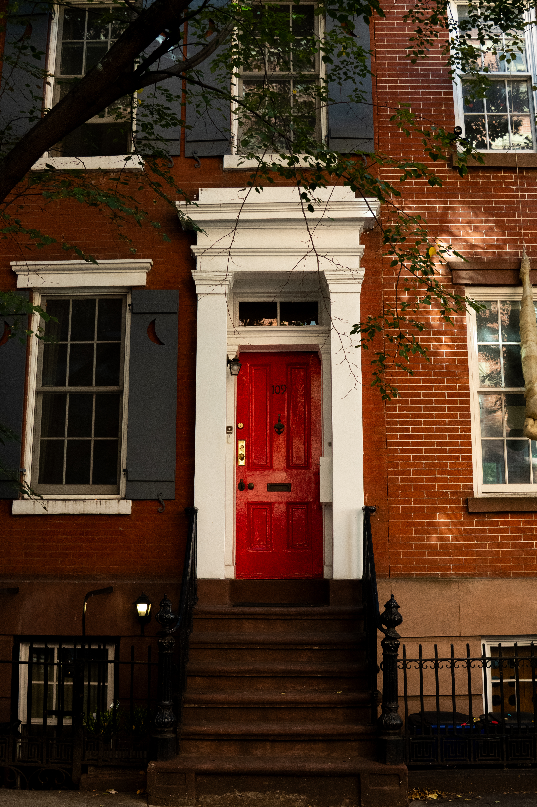
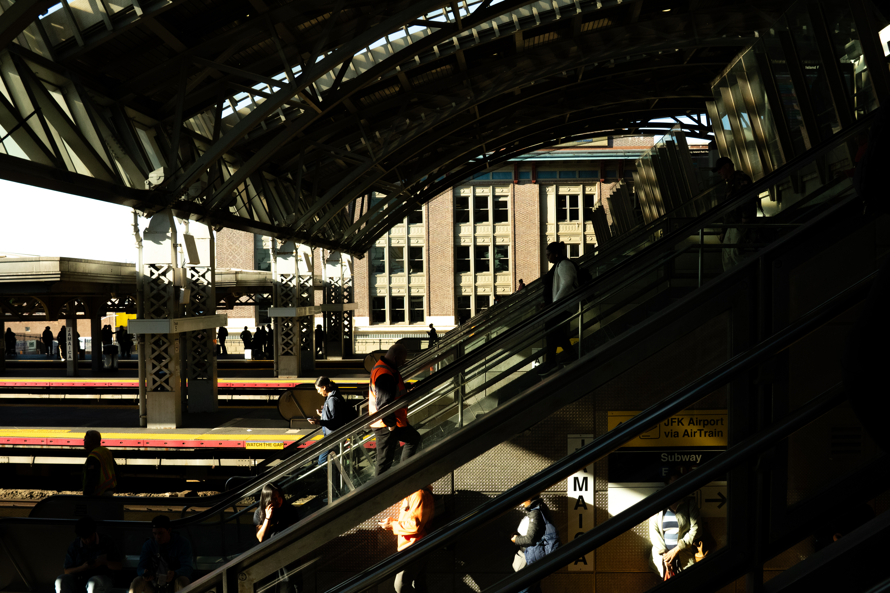

New York
New York City is a world famous destination known for its towering skyscrapers, diverse neighborhoods, and nonstop energy. Visitors can explore iconic attractions such as Times Square, Central Park, the Statue of Liberty, and the Empire State Building.










